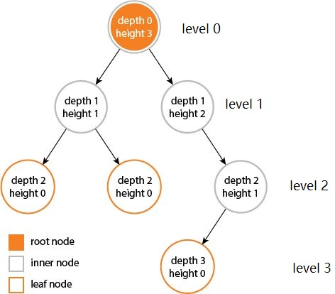
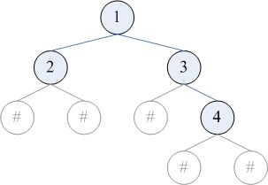
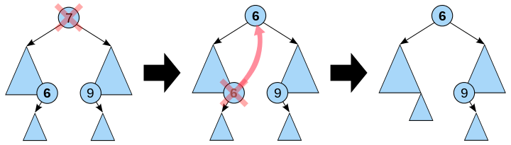

之所以叫树是因为他看起来像一棵倒挂的树
定义 树 （tree）是一种抽象数据类型（ADT）或是实现这种抽象数据类型的数据结构，用来模拟具有树状结构性质的数据集合。它是由n（n>0）个有限节点组成一个具有层次关系的集合。把它叫做“树”是因为它看起来像一棵倒挂的树，也就是说它是根朝上，而叶朝下的。它具有以下的特点：
每个节点都只有有限个子节点或无子节点
没有父节点的节点称为根节点
每一个非根节点有且只有一个父节点
除了根节点外，每个子节点可以分为多个不相交的子树
树里面没有环路(cycle)
术语
节点的度(Degree) ：一个节点含有的子树的个数称为该节点的度树的度(Degree of tree) ：一棵树中，最大的节点度称为树的度叶节点(Leaf) ：度为零的节点分支节点(Branch node) ：度不为零的节点父节点(Parent) ：若一个节点含有子节点，则这个节点称为其子节点的父节点子节点(child) ：一个节点含有的子树的根节点称为该节点的子节点兄弟节点(siblings) ：具有相同父节点的节点互称为兄弟节点层次(level) ：从根开始定义起，根为第1层，根的子节点为第2层，以此类推深度(depth) ：对于任意节点n,n的深度为从根到n的唯一路径长，根的深度为0高度(height) ：对于任意节点n,n的高度为从n到一片树叶的最长路径长，所有树叶的高度为0节点的祖先(ancestor) ：从根到该节点所经分支上的所有节点森林(forest) ：由m（m>=0）棵互不相交的树的集合称为森林

分类 本文将介绍二叉树(Binary tree)、二叉搜索树(Binary search tree)和字典树(Trie)。关于AVL树(AVL tree)、红黑树(Red–black tree)和Ｂ树(B-tree)，不做深入探讨。
这里区分一下完全二叉树、满二叉树、完美二叉树:
完全二叉树：最后一层的叶子节点均需在最左边
满二叉树：满足完全二叉树性质，树中除了叶子节点，每个节点都有两个子节点
完美二叉树：满足满二叉树性质，树的叶子节点铺满最后一层
二叉树(Binary tree) 二叉树 （英语：Binary tree）是每个节点最多只有两个分支（即不存在分支度大于2的节点）的树结构。通常分支被称作“左子树”或“右子树”。二叉树的分支具有左右次序，不能随意颠倒。
1 2 3 4 5 6 7 8 9 10 11 12 13 14 15 16 17 18 19 20 21 22 23 24 25 class Node (object) : def __init__ (self, value) : self.val = value self.left = None self.right = None ''' # 建一个二叉树 # 1 # / \ # 2 3 # / \ / \ # 4 5 6 7 ''' root = Node(1 ) stack = [root] value = 2 for i in range(3 ): cur = stack.pop(0 ) cur.left = Node(value) stack.append(cur.left) value += 1 cur.right = Node(value) stack.append(cur.right) value += 1
二叉树的遍历 二叉树的遍历有前序遍历、中序遍历、后序遍历和层序遍历等，这里用迭代和递归两个方法介绍。
前序遍历 递归 1 2 3 4 5 6 def preorderTraversal (root) : if not root: return print(root.val, end = ' ' ) preorderTraversal(root.left) preorderTraversal(root.right)
迭代 1 2 3 4 5 6 7 8 9 10 11 12 13 14 15 16 17 18 19 20 21 22 23 24 def preorderTraversalIter (root) : if not root: return res stack = [root] while stack: node = stack.pop() print(node.val, end = ' ' ) if node.right: stack.append(node.right) if node.left: stack.append(node.left) def preorderTraversalIter (root) : if not root: return res stack = [] while root or stack: while root: stack.append(root) print(root.val, end = ' ' ) root=root.left root=stack.pop() root=root.right
中序遍历 递归 1 2 3 4 5 6 def inorderTraversal (root) : if not root: return inorderTraversal(root.left) print(root.val) inorderTraversal(root.right)
迭代 1 2 3 4 5 6 7 8 9 10 11 def inorderTraversalIter (root) : if not root: return res stack = [] while root or stack: while root: stack.append(root) root=root.left root=stack.pop() print(root.val, end = ' ' ) root=root.right
后序遍历 递归 1 2 3 4 5 6 def postorderTraversal (root) : if not root: return postorderTraversal(root.left) postorderTraversal(root.right) print(root.val)
迭代 比较tricky的办法是吧后序遍历转变成中右左遍历的倒序，代码如下
1 2 3 4 5 6 7 8 9 10 11 12 13 14 15 16 17 18 19 20 21 22 23 24 25 26 27 28 def postorderTraversalIter (root) : res = [] if not root: return res stack = [root] while stack: node = stack.pop() if node.left : stack.append(node.left) if node.right: stack.append(node.right) res.append(node.val) return res[::-1 ] def postorderTraversalIter (root) : res = [] if not root: return res stack = [] while root or stack: while root: stack.append(root) res.append(root.val) root = root.right root = stack.pop() root = root.left return res[::-1 ]
层序遍历 1 2 3 4 5 6 7 8 9 10 def levelOrderTraversal (root) : queue = [root] while queue: node = queue.pop(0 ) if node.left : queue.append(node.left) if node.right: queue.append(node.right) print(node.val, end = ' ' )
输出 1 2 3 4 5 6 7 8 9 10 11 12 13 14 前序遍历_递归： 1 2 4 5 3 6 7 前序遍历_迭代： 1 2 4 5 3 6 7 中序遍历_递归： 4 2 5 1 6 3 7 中序遍历_迭代： 4 2 5 1 6 3 7 后序遍历_递归： 4 5 2 6 7 3 1 后序遍历_迭代： 4 5 2 6 7 3 1 层序遍历： 1 2 3 4 5 6 7
二叉树的序列化 「序列化」（serialization），指的是把复杂的数据结构转化为线性结构，以方便存储的过程。序列化得到的线性结构必须能重建出原有的结构，才有意义。
仅使用一种遍历的序列化方法 这是最常见的序列化方法。可以采用的遍历顺序包括先序、后序、层序。在遍历时，要把空指针也包含在遍历的结果中。例如，对下图的二叉树，进行先序、后序、层序遍历的结果分别为 12##3#4##、##2###431、123###4##（# 表示空指针）。

1 2 3 4 5 6 7 8 9 10 11 12 13 14 15 def reconstruct (root) : if not root: return res stack = [root] while stack: node = stack.pop() print(node.val, end=' ' ) if node.right: stack.append(node.right) else : print('#' , end = ' ' ) if node.left: stack.append(node.left) else : print('#' , end = ' ' )
而仅根据（带空指针的）中序遍历，是不能重建二叉树的。比如，上面这棵树的中序遍历为 #2#1#3#4#。事实上可以证明，任何一棵二叉树的中序遍历结果，都会是空指针与树中结点交替出现的形式，所以空指针没有提供任何额外的信息。原文
二叉搜索树(Binary search tree) 二叉查找树 （英语：Binary Search Tree），也称为二叉搜索树 、有序二叉树 （ordered binary tree）或排序二叉树 （sorted binary tree），是指一棵空树或者具有下列性质的二叉树：
若任意节点的左子树不空，则左子树上所有节点的值均小于它的根节点的值
若任意节点的右子树不空，则右子树上所有节点的值均大于它的根节点的值
任意节点的左、右子树也分别为二叉查找树
没有键值相等的节点
空间复杂度：O(n )。
时间复杂度：
算法
平均
最差
搜索
O(log n )
O(n )
插入
O(log n )
O(n )
删除
O(log n )
O(n )
二叉搜索树的建立 插入节点
若b是空树，则将node所指节点作为根节点插入，否则：
若node.val等于b的根节点的数据域之值，则返回，否则：
若node.val小于b的根节点的数据域之值，则把s所指节点插入到左子树中，否则：
把node所指节点插入到右子树中
新插入节点总是叶子节点，所以数字组成相同但是排序不同的序列所构造的二叉搜索树其实是不同的。但是序列化（见后文）的结果是一致的。
查找节点
若b是空树，则搜索失败，否则：
若x等于b的根节点的数据域之值，则查找成功；否则：
若x小于b的根节点的数据域之值，则搜索左子树；否则：
查找右子树
删除节点 自己做leetcode 450时的解法 ，非递归，算法有些复杂。
1 2 3 4 5 6 7 8 9 10 11 12 13 14 15 16 17 18 19 20 21 22 23 24 25 26 27 28 29 30 31 32 33 34 35 36 37 38 39 40 41 42 43 44 45 46 47 48 49 class Solution : def deleteNode (self, root: TreeNode, key: int) -> TreeNode: def delete (node) : if not node.left and not node.right:return None elif not node.left:return node.right elif not node.right:return node.left else : if not node.left.right: node.left.right=node.right return node.left elif not node.left.right: node.left.right=node.right return node.left else : pre=left=node.left while left.right: pre=left left=left.right pre.right=left.left left.left=node.left left.right=node.right return left if not root:return root if root.val==key: root=delete(root) return root father=node=root while node.val!=key: if node.val>key: father=node node=node.left else : father=node node=node.right if not node:return root if father.left==node:father.left=delete(node) else : father.right=delete(node) return root
这里给出递归的方式。递归的好处在于不用考虑寻找父节点以及待删除结点到底是父节点的左子节点还是右子节点。
在二叉查找树删去一个结点，分三种情况讨论：
若待删除结点p为叶子结点，即PL（左子树）和PR（右子树）均为空树。由于删去叶子结点不破坏整棵树的结构，则只需修改其双亲结点的指针即可。
若待删除结点只有左子树PL或右子树PR，此时只要令PL或PR直接成为其双亲结点f的左子树（当p是左子树）或右子树（当p是右子树）即可，作此修改也不破坏二叉查找树的特性。
若p结点的左子树和右子树均不空。在删去p之后，为保持其它元素之间的相对位置不变，可按中序遍历保持有序进行调整，可以有两种做法：其一是令p的左子树为f的左/右（依p是f的左子树还是右子树而定）子树，s为p左子树的最右下的结点，而p的右子树为s的右子树；其二是令p的直接前驱（in-order predecessor）或直接后继（in-order successor）替代p，然后再从二叉查找树中删去它的直接前驱（或直接后继）。

整体代码 1 2 3 4 5 6 7 8 9 10 11 12 13 14 15 16 17 18 19 20 21 22 23 24 25 26 27 28 29 30 31 32 33 34 35 36 37 38 39 40 41 42 43 44 45 46 47 48 49 50 51 52 53 54 55 56 57 58 59 60 61 62 63 64 class BinarySearchTree : def __init__ (self, value) : self.val = value self.left=None self.right=None def find_min (self) : current = self while current.left: current = current.left return current def find_max (self) : current = self while current.right: current = current.right return current def insert (self, value) : node = BinarySearchTree(value) current = self while True : if value < current.val: if current.left is None : current.left = node return current = current.left elif value > current.val: if current.right is None : current.right = node return current = current.right else : return self def find (self, value) : current = self while current: if current.val == value: return current current = current.left if value < current.val else current.right return current def delete (self,value) : if self.find(value): if value<self.val: self.left=self.left.delete(value) return self elif value>self.val: self.right=self.right.delete(value) return self elif self.left and self.right: val=self.right.findMin().val self.val=val self.right=self.right.delete(val) return self else : if self.left: return self.left else : return self.right else : return self
注：代码中没有考虑空树。
字典树(Trie) Trie，又称前缀树或字典树，是一种有序树，用于保存关联数组，其中的键通常是字符串。与二叉查找树不同，键不是直接保存在节点中，而是由节点在树中的位置决定。一个节点的所有子孙都有相同的前缀，也就是这个节点对应的字符串，而根节点对应空字符串。一般情况下，不是所有的节点都有对应的值，只有叶子节点和部分内部节点所对应的键才有相关的值。
1 2 3 4 5 6 7 8 9 10 11 12 13 14 15 16 17 18 19 20 21 22 23 24 25 26 27 28 29 30 31 class Trie : def __init__ (self) : self.lookup = {} def insert (self, word) : tree = self.lookup for a in word: if a not in tree: tree[a] = {} tree = tree[a] tree["#" ] = "#" def search (self, word) : tree = self.lookup for a in word: if a not in tree: return False tree = tree[a] if "#" in tree: return True return False def startsWith (self, prefix) : tree = self.lookup for a in prefix: if a not in tree: return False tree = tree[a] return True
B树(B-tree)和B+树(B+ tree) B树 （B-tree）是一种自平衡的树，能够保持数据有序。这种数据结构能够让查找数据、顺序访问、插入数据及删除的动作，都在对数时间内完成。B树，概括来说是一个一般化的二叉查找树（binary search tree）一个节点可以拥有2个以上的子节点。与自平衡二叉查找树不同，B树适用于读写相对大的数据块的存储系统，例如磁盘。B树减少定位记录时所经历的中间过程，从而加快存取速度。B树这种数据结构可以用来描述外部存储。这种数据结构常被应用在数据库和文件系统的实现上。
B+ 树 是一种树数据结构，通常用于数据库和操作系统的文件系统中。B+ 树的特点是能够保持数据稳定有序，其插入与修改拥有较稳定的对数时间复杂度。B+ 树元素自底向上插入，这与二叉树恰好相反。
B+树与B树最大的不同是内部结点不保存数据，只用于索引，所有数据（或者说记录）都保存在叶子结点中。
请参考这篇文章
AVL树(AVL tree) AVL树 是最早被发明的自平衡二叉查找树。在AVL树中，任一节点对应的两棵子树的最大高度差为1，因此它也被称为高度平衡树。查找、插入和删除在平均和最坏情况下的时间复杂度都是O(log n)。增加和删除元素的操作则可能需要借由一次或多次树旋转，以实现树的重新平衡。
节点的平衡因子 是它的左子树的高度减去它的右子树的高度（有时相反）。带有平衡因子1、0或 -1的节点被认为是平衡的。带有平衡因子 -2或2的节点被认为是不平衡的，并需要重新平衡这个树。平衡因子可以直接存储在每个节点中，或从可能存储在节点中的子树高度计算出来。
AVL树的基本操作一般涉及运作同在不平衡的二叉查找树所运作的同样的算法。但是要进行预先或随后做一次或多次所谓的”AVL旋转”。
黑红树(Red–black tree) 红黑树 是每个节点都带有颜色属性的二叉查找树，颜色为红色或黑色。在二叉查找树强制一般要求以外，对于任何有效的红黑树我们增加了如下的额外要求：
节点是红色或黑色。
根是黑色。
所有叶子都是黑色（叶子是NIL节点）。
每个红色节点必须有两个黑色的子节点。（从每个叶子到根的所有路径上不能有两个连续的红色节点。）
从任一节点到其每个叶子的所有简单路径都包含相同数目的黑色节点。
下面是一个具体的红黑树的图例：
操作有变色，左旋，右旋。
树堆(treap) 树堆 （Treap）是二叉排序树（Binary Sort Tree）与堆（Heap）结合产生的一种拥有堆性质的二叉排序树。
但是这里要注意两点，第一点是Treap和二叉堆有一点不同，就是二叉堆必须是完全二叉树，而Treap并不一定是；第二点是Treap并不严格满足平衡二叉排序树（AVL树）的要求，即树堆中每个节点的左右子树高度之差的绝对值可能会超过1，只是近似满足平衡二叉排序树的性质。
Treap每个节点记录两个数据，一个是键值，一个是随机附加的优先级，Treap在以关键码构成二叉排序树的同时，又以结点优先级形成最大堆和最小堆。所以Treap必须满足这两个性质，一是二叉排序树的性质，二是堆的性质。如下图，即为一个树堆。
完整测试代码地址
错误与不足请不吝指正，转载请注明，谢谢
参考
https://zh.wikipedia.org/wiki/%E6%A0%91_(%E6%95%B0%E6%8D%AE%E7%BB%93%E6%9E%84) )https://leetcode-cn.com/problems/binary-tree-inorder-traversal/solution/die-dai-he-di-gui-by-powcai/ https://zhuanlan.zhihu.com/p/26418233 https://python123.io/index/topics/data_structure/binary_tree https://leetcode-cn.com/problems/implement-trie-prefix-tree/solution/pythonjian-dan-shi-xian-by-powcai/